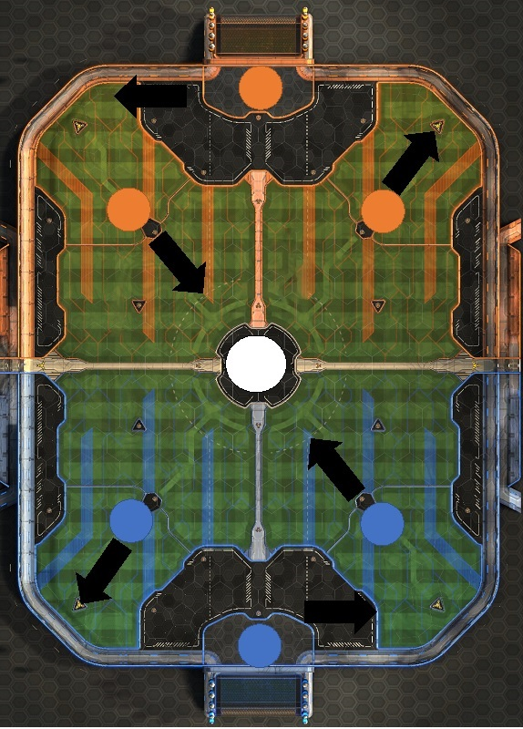
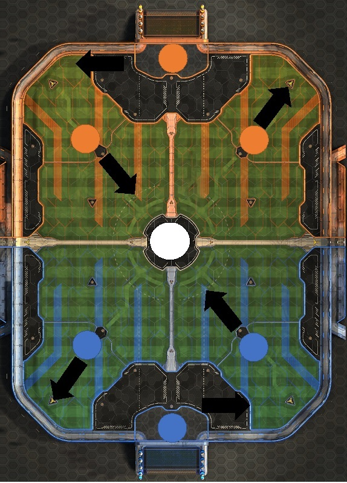

Rocket League- A deep dive into 3-man rotation- part 1
In most competitive team sports, a team will have a playbook and inside this playbook will have hundreds of different plays that are memorised by the indiviudals within the team. These plays can then be called on the fly by the coach and the players can react and get into the right positions. Plays are used to strategically to get around a oppositions defense, thus making it easier to score points. Plays can be used for offensive or defensive sets, playbooks make sure teams are well prepared to face their opponent, this usually means there is a period of time where both teams are trying to figure out the others gameplan.
And the same goes for Esports, especially with a game like Rocket League where the concept is based off of a real sport where they use formations and different plays so it is natural for that to carry across to the digital version of the sport. At the beginning of competitive Rocket League teams did not use too many plays as indiviudal skill was enough for most teams to win. So passing plays weren't really a thing, but as the game has progressed now into its 10th season, and the ceiling of skill has dramatically risen in a short time, individual skill can no longer be at the forefront of a teams play style, not to say that isnt still in the game but it just isn't as common as it once was. Teams are now figuring out that they have to create tight-knit plays in order to penetrate a defense. One of these plays is the 3-man rotation, which is a defensive play, it makes sure that there is always a player rotating and backing up the weak side of the defense.
 

The picture above shows what one of the starting positions for Rocket League is, one player spawns in the Goal and two players spawn parallel to eachother and then the ball is in the middle of the pitch. During this kickoff one of the players from each team will nominate themselves to go for the ball, the reason why both dont go for the ball is so that the other members of the team can setup the 3-man rotation. This means the player who goes for the ball can then rotate and pick up boost and slot into the back position of the rotation.

This brings us to the first rotation, as the player who went to kick off now returns back to their side of the field in this example they went to the same side the opposition did so they will have to go back to their goal with no boost. Depending on which side of the field the ball is, the closest player will go to attack the ball, in the example above you can see that the blue team is on the attack and orange team is on defense. The orange team are setup up in a neat and tidy formation where they can easily attack and rotate around where the ball is. The blue team is setup with a player attacking the ball and the second player is holding down the fort in goal whilst the back player is rotating. This is the first rotation in this example, now to show you were listening, click on the quiz button to test your new-found knowledge.
Quiz Button